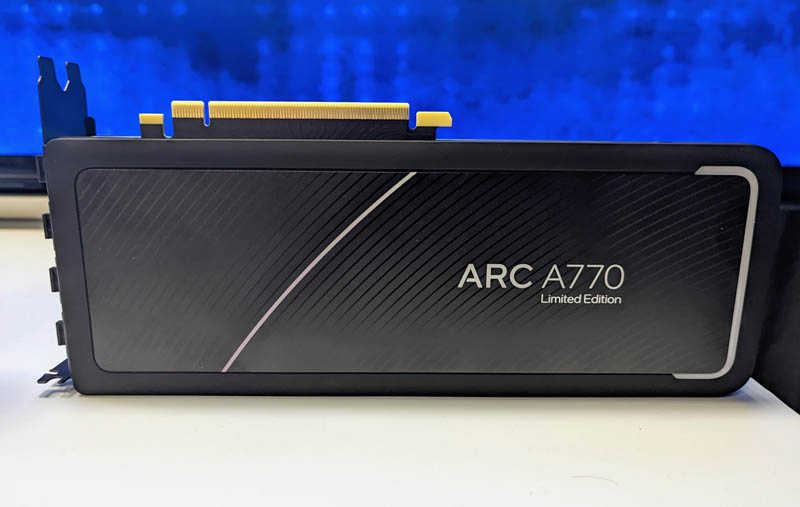
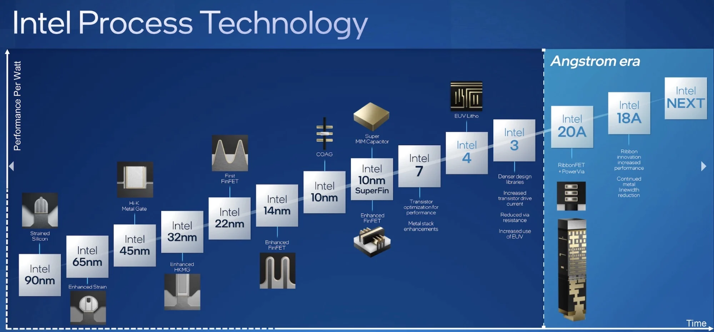

Intel
На даній сторінці ви знайдете інформацію про фірму виробника процесорів для ПК Intel.
Історія Intel
Intel Corporation - це одна з найбільших і найвідоміших технологічних компаній у світі, заснована в 1968 році Робертом Нойсом і Гордоном Муром. Компанія почала свою діяльність з виробництва напівпровідникових мікросхем, включаючи перші комерційні динамічні запам'ятовувальні пристрої (DRAM). Проте справжній прорив стався в 1971 році, коли Intel представила перший у світі мікропроцесор — Intel 4004. Це був перший інтегральний чип, що поєднував процесорні функції на одному пристрої.
У 1980-х роках Intel почала домінувати на ринку центральних процесорів для персональних комп'ютерів завдяки своїй серії x86. Саме ця архітектура стала основою для більшості сучасних ПК, що закріпило позиції Intel як ключового гравця на ринку. Завдяки співпраці з IBM у створенні персональних комп'ютерів, Intel посилила свою популярність і стала стандартом для виробників ПК у всьому світі.
Компанія продовжила зміцнювати свої позиції в 1990-х і 2000-х роках з випуском відомих процесорів, таких як Pentium, які використовувалися в мільйонах комп'ютерів по всьому світу. Intel активно впроваджувала інновації, закладаючи основу для сучасної комп'ютерної індустрії.
Центральні процесори (CPU)
Центральні процесори (CPU) — основний продукт Intel, і вони забезпечили компанії глобальне лідерство на ринку. Першим великим досягненням став процесор Intel 4004, який був представлений у 1971 році і мав революційне значення для розвитку комп'ютерних систем. Протягом наступних десятиліть Intel продовжувала вдосконалювати свої процесори, випускаючи серії Pentium, Core, і Xeon.
Процесори серії Core були одними з найпопулярніших на ринку протягом багатьох років. Вони з'явилися в 2006 році з впровадженням технології Core 2 Duo, яка забезпечила значний приріст продуктивності при зниженому енергоспоживанні. Пізніше лінійка Core i3, i5, i7 і i9 стала стандартом для різних категорій ПК — від бюджетних до високопродуктивних рішень для професійного використання та геймерів.
Intel також активно працює в серверному сегменті зі своєю серією процесорів Xeon, яка забезпечує високу продуктивність і надійність для дата-центрів і серверів. Xeon став стандартом для підприємств і хмарних провайдерів завдяки своїй масштабованості та підтримці сучасних обчислювальних задач, таких як штучний інтелект і машинне навчання.

Приклад процесора: Intel I9 10900K покоління Comet Lake.
Графічні процесори (GPU)
Хоча Intel завжди була більше відома своїми центральними процесорами, компанія активно працює і в сфері графічних процесорів (GPU). Протягом багатьох років Intel інтегрувала свої Intel HD Graphics та Iris Graphics у центральні процесори, щоб забезпечити базову графічну продуктивність для ноутбуків і настільних комп'ютерів. Ці рішення не призначені для високопродуктивних ігор, але є достатніми для щоденних обчислювальних завдань і медіа.
У 2020 році Intel оголосила про запуск нової лінійки дискретних графічних процесорів під назвою Intel Arc. Ці процесори спрямовані на конкуренцію з такими компаніями, як NVIDIA і AMD на ринку дискретних GPU для ігор і професійних завдань. Intel прагне використати свої технологічні інновації для створення конкурентоспроможних рішень, які будуть задовольняти потреби геймерів та професіоналів у сфері графіки.
Приклад відеокарти: Intel Arc A770.
Інновації та технології
Intel завжди була лідером у сфері технологічних інновацій. Однією з головних концепцій, яку компанія впровадила, є "Закон Мура", названий на честь одного із засновників компанії Гордона Мура. Закон передбачає, що кількість транзисторів на інтегральній схемі буде подвоюватися приблизно кожні два роки, що веде до підвищення продуктивності процесорів. Хоча цей прогноз в останні роки дещо сповільнився, він залишився важливим принципом для Intel.
Компанія також зробила великий внесок у розвиток технологій, таких як Hyper-Threading, що дозволяє одному процесору виконувати кілька потоків даних одночасно, значно підвищуючи його продуктивність. Intel Turbo Boost також став ключовою технологією для динамічного збільшення тактової частоти процесора в залежності від навантаження.
Intel також активно розвиває технології штучного інтелекту та машинного навчання, а також рішення для хмарних обчислень. У своїх серверних процесорах Intel використовує технології для забезпечення надійності та безпеки корпоративних обчислень, таких як Intel SGX (Software Guard Extensions) для забезпечення безпечного середовища виконання програм.
Стратегія та майбутнє
Intel активно працює над стратегією переходу на нові архітектури та технології, щоб зберегти лідерство на ринку. Зараз компанія зосереджена на розробці нових поколінь процесорів на базі Intel 7 (10nm) та Intel 4 (7nm) техпроцесів, що мають забезпечити значний приріст продуктивності при зниженому енергоспоживанні. Водночас Intel планує продовжувати інвестиції в технології штучного інтелекту, високопродуктивні обчислення та графіку.
Intel також посилює свою присутність на ринку дискретних графічних процесорів з запуском Intel Arc. Це стане важливим кроком для компанії в конкуренції з NVIDIA і AMD у сфері графічних обчислень для геймерів та професіоналів.
Однією з ключових стратегій компанії на майбутнє є розвиток ринку Quantum Computing. Intel робить значні інвестиції у створення квантових процесорів і дослідження в цій сфері, що може стати новим етапом в історії обчислювальних технологій.
Дорожна карта розвитку процесорів від Intel.